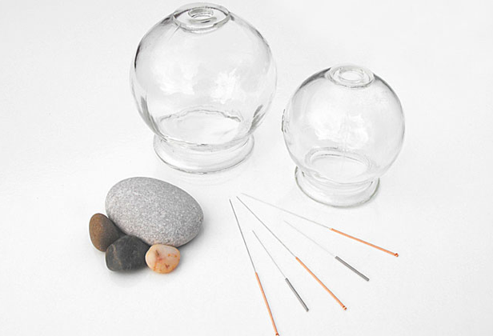
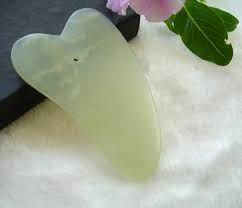

isabelle.integmed@icloud.com
512-879-6555
(no text messages)
WELCOME ABOUT SERVICES PEDIATRICS APPOINTMENTS FAQ
ACUPUNCTURE
ASIAN BODY WORK
CHINESE HERBAL FORMULAS
COMPLEMENTARY TECHNIQUES
Complementary Techniques
Acupuncture with Electrical Stimulation
Acupuncture with electrical stimulation (E-stim) is very similar to traditional acupuncture, as explained above. Using the exact same system of Traditional Chinese Medicine (TCM), very thin sterile needles are inserted into specific points along the channels. A device is then attached to the needles, which gently delivers electrical pulses between two points. This helps restore the healthy flow of Qi through your body, removing blockages and clearing out stagnant areas.
Cupping
Cupping is an ancient technique, used in many cultures, in which a special cup is applied to the skin and held in place by suction. The suction draws superficial tissue into the cup, which may either be left in place or moved along the body. Cupping brings fresh blood to the area and helps improve circulation. Traditional cupping, sometimes referred to as "fire cupping," uses heat to create a vacuum-like suction inside of glass cups. In modern times, cups that use a small pump to create suction have also been introduced.

Guasha
Guasha involves first applying oil to a selected area of your body. Then, a smooth, round-edged tool is pressed against your skin and is moved, using short brisk strokes to that area. This creates red patches of skin (called "Sha") and opens your pores, detoxifying your blood, and restoring the healthy flow of Qi to the area.
PLEASE NOTE: SIMILAR TO CUPPING, GUASHA CAN RESULT IN RED PATCHES (SHA) ON YOUR SKIN AFTER TREATMENT, BUT WILL FADE WITHIN A FEW DAYS.
